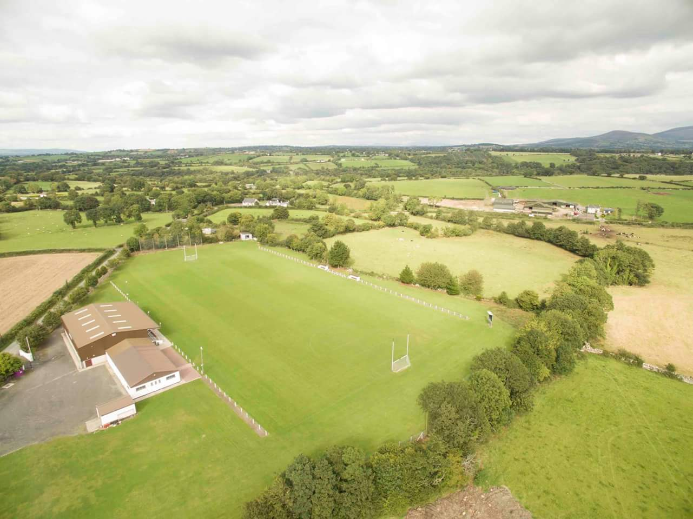

Blacks & Whites GAA Club
Cumann Dubh agus Bána CLGs
The Blacks & Whites Club was founded in 1925. In its infancy the club was closely associated with one man, Tom Walsh from Courtnaboughla, Skeoughvosteen. Tom went to school locally and attended Pallaskenry college Limerick, where he played hurling and football with the college. On his return home together with Jim Brennan, Mick Moran, the Kelly’s, the Power’s, the Moylan’s and others founded the Blacks and Whites Club in 1925. Tom went on and became chairman of the Kilkenny County Board, Leinster Council and Vice President of Central Council of The G.A.A.
The Tom Walsh Cup, the trophy presented to the Kilkenny Senior Hurling Champions anually, is presented in his memory. Tom also was Minister for Agriculture at the time of his death in 1952. On May 28th 1978, the Blacks & Whites opened its new grounds at Coolnabrone, Skeoughvosteen and named it Tom Walsh Park.
Blacks and Whites boasts some of the finest facilities in the county. Since the origional clubhouse was built in the 1990's, the club has seen major improvmeents in the following years. Our largest undertaking was the indoor arena which has an astro turf surface. It was built in 2006 and opened in 2007 and is a very popular facility for a number of sports and events. A number of large events took place in recent years in the astroturf arena including a Wolfe Tones concert and our 'Strictly Club Dancing' fundraising event.
Adjoining this arena is the stand which looks out onto the main pitch. The seating in the stand is the origional timber seats that were extracted from the old Hogan stand before the Croke Park stadium upgrade

We also have a bar and function room which caters for many events and occasions. We host everything from birthdays to medal presentations, music events and funeral refreshments. We a have large plasma screen TV and projector to cater for large sporting events and training courses.
"A single content area with multiple panels, each associated with a header in a list"
Step One: Add jQueryUI CSS links
Links to the jQueryUI CSS should be added to the head section of the page whenever you want to make use of a jQueryUI element on your page: stylesheet" href="css/jquery-ui.css
Step Two: Add jQueryUI JavaScript links
You should also include a link to the jQueryUI script at the end of the body section, in addition to the jQuery script: src="js/jquery-3.1.1.min.js" src="js/jquery-ui.js"
Step Three: add jQuery function
The jQuery shown here targets the #tabs div and calls the tabs function. Add this after the three lines you added in the previous step: $( function() { var tabs = $( "#tabs" ).tabs(); tabs.find( ".ui-tabs-nav" ).sortable({ axis: "x", stop: function() { tabs.tabs( "refresh" ); } }); } );
Step Four: use appropriate HTML
To use the tabs element, add id=tab-1 to the div containing the headings and paragraphs.
Instructions
Drag the tabs above to re-order them
Membership
Sign Up NowNoticeBoard
Sed do eiusmod tempor incididunt ut labore et dolore magna aliqua. Ut enim ad minim veniam, quis nostrud exercitation ullamco laboris nisi ut aliquip ex ea commodo consequat. Duis aute irure dolor in reprehenderit in voluptate velit esse cillum dolore eu fugiat nulla pariatur.